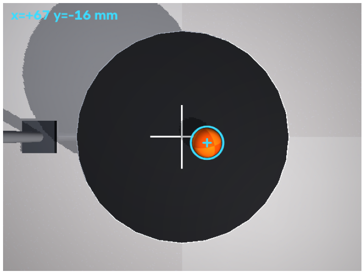
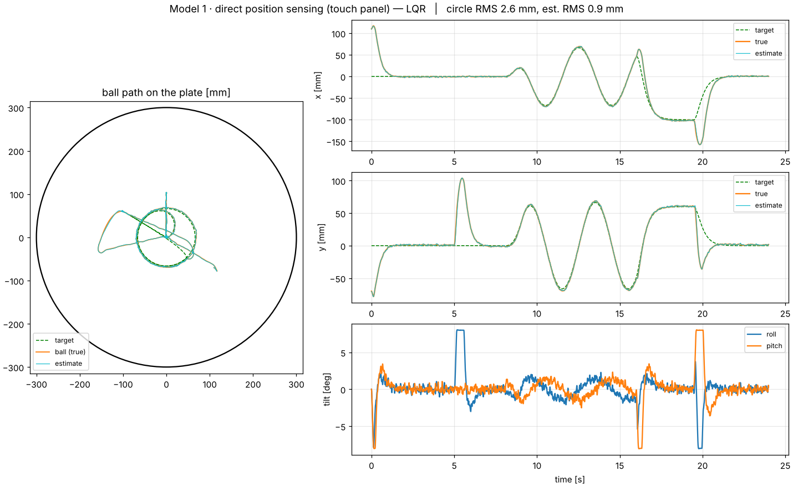
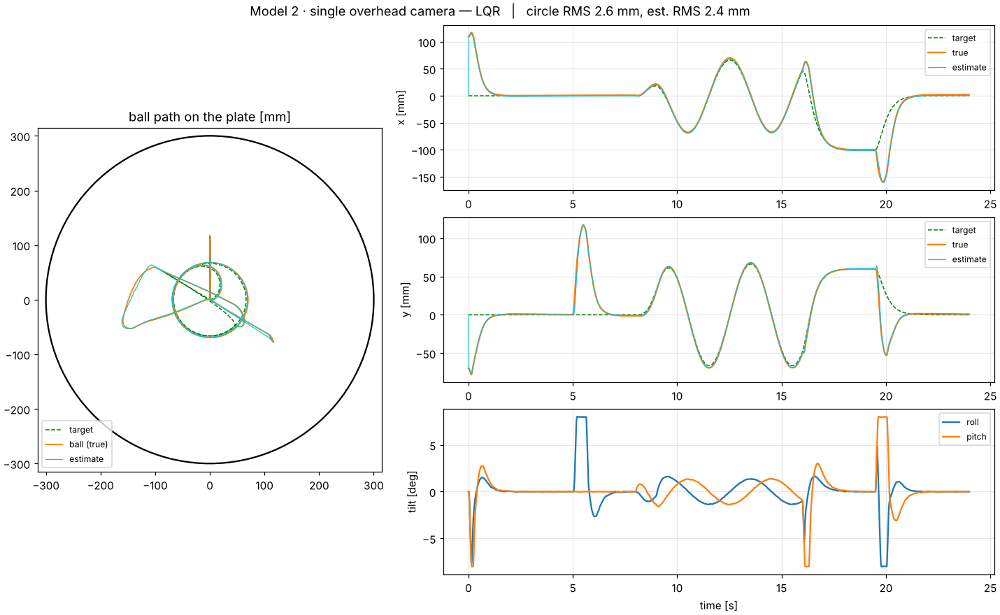
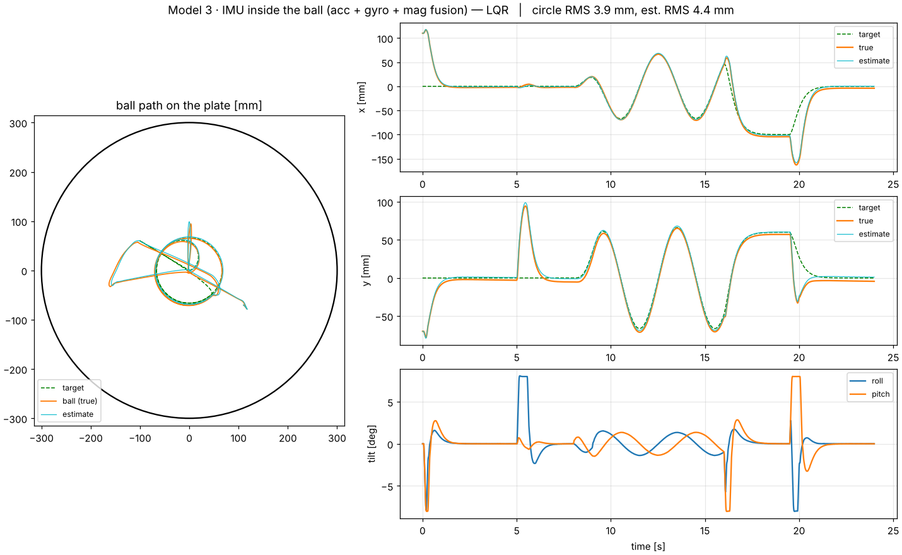

Self-balancing ball
A round platform carried by four servo-valve hydraulic cylinders keeps a ball from rolling off. Classical control and estimation only: PID, LQR, Kalman filters and a complementary-filter AHRS. There is no AI/ML in the loop.
Balance it yourself
The loop runs three steps hundreds of times a second. Play with it below: move the target, flick the ball, switch sensors, or turn the controller off and try balancing by hand.
Measure the ball
A touch panel, an overhead camera or an IMU inside the ball reports where it is, each with its own rate, noise and delay.
Filter the noise
A Kalman filter turns noisy, delayed samples into a clean position and velocity estimate (the orange ring).
Drive four cylinders
The controller picks a plate tilt (at most 8°) that rolls the ball toward the target, and maps it to four cylinder strokes.
Top view
Side view
PID gains
This is a simplified 2-D ball-on-plate model running in your browser, not the MuJoCo simulation. It uses the 8° tilt limit, the platform's measured tilt response (63% in about 37 ms) and each sensor's rate, noise and latency from the project. The PID gains are tuned for this simplified model, not taken from the project (see the controller design table below). The IMU drift and camera bias are illustrative. Try raising kp or kd to see the loop start to oscillate.
The ROS 2 graph
Pick a sensor model to see which path is live. The same controller and plant serve all three models; only the sensing and estimation change.
Estimating the ball three ways
Each model was built on the previous one. Only the sensing and estimator change; the controllers stay the same.
| Model | Sensor | Estimator |
|---|---|---|
| 1. Direct | Touch panel under the rubber top, 100 Hz, 0.8 mm noise | Model-based Kalman filter |
| 2. Single camera | Overhead 640×480 camera, 60 fps, 12 ms latency | HSV blob → pixel ray ∩ plate plane (plate pose from cylinder LVDTs) → delay-compensated Kalman filter |
| 3. IMU in ball | Accelerometer, gyro and magnetometer, 200 Hz, biased and noisy | Mahony AHRS → rolling-without-slip odometry → Kalman filter |


24-second scenario
The scenario is a release, a push, two laps of an 8 cm circle, a set-point hold and a diagonal push. Cells show offline / ROS 2 graph. Offline runs are deterministic (seed 0); the ROS runs use /clock with real message passing.
| Model | Controller | Ball lost? | Circle RMS error [mm] | Final hold error [mm] | Estimation RMS [mm] | Peak cylinder force [N] |
|---|---|---|---|---|---|---|
| 1. Direct | LQR | no / no | 2.6 / 3.0 | 1.4 / 1.3 | 0.9 / 1.7 | 200 |
| 1. Direct | PID | no / no | 2.6 / 2.9 | 2.1 / 2.1 | 0.9 / 1.6 | 211 |
| 2. Single camera | LQR | no / no | 2.6 / 3.4 | 2.1 / 1.3 | 2.4 / 3.2 | 202 |
| 2. Single camera | PID | no / no | 3.1 / 3.9 | 2.8 / 2.0 | 2.4 / 3.1 | 173 |
| 3. IMU in ball | LQR | no / no | 3.9 / 5.1 | 5.7 / 8.6 | 4.4 / 5.9 | 200 |
| 3. IMU in ball | PID | no / no | 4.3 / 5.8 | 4.7 / 6.4 | 4.2 / 6.0 | 217 |
The ball was never lost in any of the twelve runs. Estimation RMS includes the roughly 1.5 mm camera calibration bias and the IMU's dead-reckoning drift.



Across random seeds
Each configuration was re-run with different random seeds, varying sensor noise and initial conditions. Values are mean ± standard deviation, with the minimum and maximum in brackets. Camera runs use 3 seeds per controller; direct and IMU runs use 5.
| Estimator | Controller | Runs | Falls | Circle RMS [mm] | Final hold [mm] | Estimation RMS [mm] | Peak force [N] |
|---|---|---|---|---|---|---|---|
| Direct | LQR | 5 | 0 | 2.60 ± 0.05 (2.53–2.66) | 1.31 ± 0.11 (1.15–1.41) | 0.91 ± 0.02 (0.87–0.92) | 209 ± 8 |
| Direct | PID | 5 | 0 | 2.63 ± 0.04 (2.58–2.66) | 1.95 ± 0.13 (1.76–2.10) | 0.90 ± 0.02 (0.86–0.92) | 199 ± 12 |
| Camera | LQR | 3 | 0 | 3.42 ± 1.30 (2.62–4.93) | 2.26 ± 1.68 (0.66–4.01) | 3.18 ± 1.34 (2.36–4.72) | 201 ± 1 |
| Camera | PID | 3 | 0 | 3.88 ± 1.20 (3.14–5.26) | 2.68 ± 1.46 (1.18–4.08) | 3.17 ± 1.33 (2.35–4.71) | 173 ± 0 |
| IMU | LQR | 5 | 0 | 5.36 ± 1.91 (3.73–7.81) | 5.98 ± 3.19 (1.85–10.70) | 5.52 ± 2.27 (2.99–8.63) | 204 ± 10 |
| IMU | PID | 5 | 0 | 5.46 ± 1.36 (3.82–7.15) | 6.26 ± 3.28 (2.18–11.01) | 5.41 ± 2.03 (2.79–8.08) | 216 ± 1 |
The direct estimator is the most repeatable: its circle error varies by only ±0.05 mm across seeds. The IMU estimator's spread is larger because dead-reckoning drift accumulates differently in each run.
How much latency it tolerates
The direct estimator was run with extra sensing delay added to the loop. The circle error grows steadily with delay, and LQR is more sensitive than PID. No run lost the ball in this range.
| Added delay [ms] | PID circle RMS [mm] | PID hold [mm] | LQR circle RMS [mm] | LQR hold [mm] |
|---|---|---|---|---|
| 0 | 2.58 | 2.10 | 2.58 | 1.41 |
| 10 | 2.77 | 2.09 | 2.88 | 1.45 |
| 20 | 2.97 | 2.11 | 3.17 | 1.54 |
| 30 | 3.18 | 2.08 | 3.37 | 1.55 |
| 40 | 3.40 | 2.11 | 3.96 | 1.87 |
| 60 | 3.82 | 2.22 | 5.03 | 2.16 |
| 80 | 4.28 | 2.32 | 5.81 | 2.25 |
Gains and step response
The LQR gains were designed for the linearised plant. The closed-loop poles are all stable, with the slowest at about −0.26 rad/s. The PID gains were tuned on the same plant.
| Controller | Parameters |
|---|---|
| PID | kp = 10.0, kd = 5.6, ki = 3.0; integrator zone 25 mm, integrator limit 0.04 |
| LQR gains K | [0.949, 4.092, 1.711, 0.359] |
| LQR closed-loop poles [1/s] | −27.1, −8.3, −3.4, −0.26 |
| Rolling gain | 7.01 |
| Ball height used in plant | 72 mm |
| Tilt step | 10% [ms] | 50% [ms] | 63% [ms] | 90% [ms] |
|---|---|---|---|---|
| 1° | 9 | 30 | 37 | 60 |
| 3° | 11 | 32 | 39 | 61 |
| 6° | 17 | 52 | 62 | 89 |
The platform's tilt response is fast: the platform reaches 90% of a commanded tilt in 60–89 ms, depending on the step size.
Plate frame vs horizontal frame
The controller can work in the plate frame or the horizontal frame. The table compares the two, with the direct estimator.
| Frame and controller | Circle RMS [mm] | Final hold [mm] | Tilt jitter [deg/step] | Peak force [N] |
|---|---|---|---|---|
| Plate frame, PID | 1.08 | 2.24 | 0.154 | 195 |
| Plate frame, LQR | 18.56 | 14.16 | 0.75 | 239 |
| Horizontal frame, PID | 2.58 | 2.10 | 0.131 | 211 |
| Horizontal frame, LQR | 2.58 | 1.41 | 0.31 | 200 |
The plate-frame LQR result is much worse, so the horizontal frame is used for LQR. The plate-frame PID has the best circle tracking, at the cost of higher tilt jitter.
Load sharing between cylinders
When the four cylinders push against each other, forces can fight and load one cylinder more than the others. A force-fight compensation was tested with and without cylinder offsets.
| Setting | Circle RMS [mm] | Final hold [mm] | Fight RMS [N] | Fight max [N] |
|---|---|---|---|---|
| Compensation off | 2.57 | 1.41 | 4.86 | 29.6 |
| Compensation on | 2.58 | 1.41 | 4.63 | 28.8 |
| Offsets, compensation off | 2.56 | 1.42 | 37.7 | 53.4 |
| Offsets, compensation on | 2.56 | 1.43 | 4.63 | 28.8 |
With cylinder offsets, the fight RMS rises from 4.6 N to 37.7 N, and compensation brings it back down to 4.6 N. Tracking accuracy is unchanged in all four settings.
Code on GitHub → · Read the technical paper (PDF) →
Simulation only. The code and tests were run natively with ROS 2 Jazzy and MuJoCo. The Docker image is set up but not yet test-built.